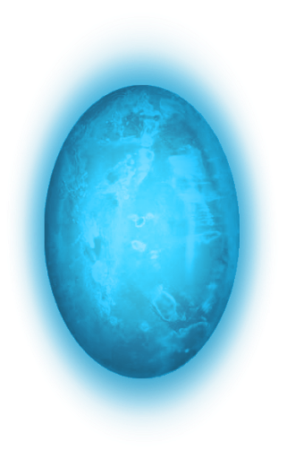
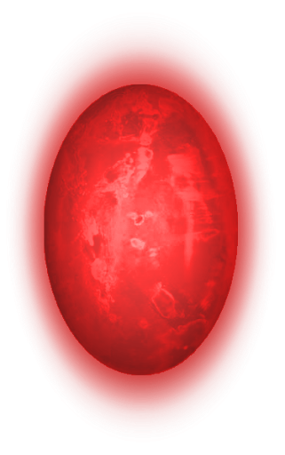
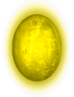
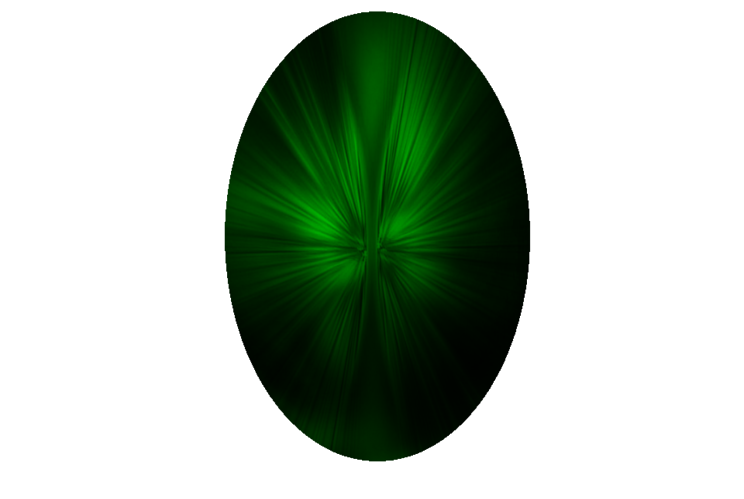
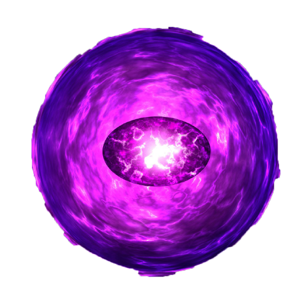

| Name | Descriprion | Color | Appearance |
|---|---|---|---|
| Mind | Allows the user to enhance their mental and psionic abilities and access the thoughts and dreams of other beings. | Blue |  |
| Power | Allows the user to access and manipulate all forms of energy and/or powers | Red |  |
| Reality | Allows the user to fulfill their wishes, even if the wish is in direct contradiction with scientific laws, and do things that would normally be impossible. | Yellow |  |
| Soul | Allows the user to steal, control, manipulate, and alter living and dead souls; as well as animate the motionless. | Green |  |
| Space | Allows the user to exist in any location; move any object anywhere throughout reality; warp or rearrange space; teleport themselves and others; increase their speed, and alter the distance between objects contrary to the laws of physics. | Purple |  |
| Time | Allows the user to see into the past and the future; stop, slow down, speed up or reverse the flow of time; travel through time; change the past and the future; age and de-age beings, and trap people or entire universes in unending loops of time. | Orange | |